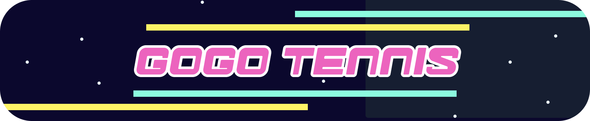

A fitness-based multiplayer tennis game controlled by your phone's motion sensors. Swing your phone like a racket — physics, scoring, and multiplayer sync across devices in real time.
After a long day of work or school, leaving the house to socialize requires time and energy most people don't have. There should be more ways to hang out without commuting anywhere.
Exercising in public is intimidating, but exercising at home alone is discouraging. There are few interactive, engaging options within the comfort of your own space.
Apps that encourage movement with friends usually require a separate console purchase. GoGo Tennis only needs a phone and a screen people already own.
A fitness tennis game controlled by phone motion sensors — playable at home, with friends, using only devices you already own. Phone = racket. Desktop = the court. No extra hardware.
The desktop renders the full 3D tennis court. Each player's phone acts as their racket — motion data from the phone's accelerometer and gyroscope is read every frame and translated into racket position, orientation, and swing force in the game world.
Swing speed maps to ball speed. Racket orientation maps to ball direction. A gentle shake barely moves the ball — a fast forward swing sends it flying.
Multiplayer was the most architecturally complex part of the project. The game needed to sync physics, scoring, player state, and motion data in real time across iOS, Android, and desktop simultaneously.
We used Unity Netcode for GameObjects and built with server authority throughout. The desktop host owns the physics simulation; phones are clients that send input and receive authoritative game state back. ClientRpc and ServerRpc handle the two directions — phones send motion data up, server sends ball position, scoring events, and animation triggers back down.
// Server receives swing input, applies physics, syncs result [ServerRpc] void SwingServerRpc(Vector3 racketVelocity, Quaternion racketRotation) { HitBall(racketVelocity, racketRotation); UpdateBallStateClientRpc(ball.position, ball.velocity); }
Character state lives on the server. When a player selects a character their client sends a ServerRpc — the server updates shared lobby state and broadcasts back to all clients. The start button only activates once both players have locked in. Changes are visible to both players in real time.
Currently players join by entering the host's IP address directly. This works over local WiFi but only one game can be hosted per IP, and IP addresses are clunky to share. The planned upgrade is a backend session server — players share a short lobby code instead of an IP.
Raw accelerometer data includes gravity as a constant downward force. We subtract gravitational influence before processing so only intentional motion contributes to swing force.
Gyroscopes drift — even a stationary phone slowly rotates the in-game racket. We fixed this by only applying rotation when input exceeds a movement threshold. Some phones also have a fixed sensor bias, so we track relative change per frame rather than absolute orientation.
// Only move racket if motion exceeds drift threshold if (gyroscopeDelta.magnitude > driftThreshold) racket.rotation *= Quaternion.Euler(gyroscopeDelta * sensitivity);
A slight orientation error shouldn't send the ball out of bounds for new players. The aimbot corrects the player's velocity toward a valid court position. Strength is adjustable — dial it down for experienced players who want precise directional control. The opponent bot uses the same calculation.
// Correct ball velocity toward valid court target private Vector3 AimBot() { Vector3 aim = Vector3.Normalize( Vector3.MoveTowards(-ball.position, targetPosition, 1)); aim = Vector3.ProjectOnPlane(aim, Vector3.up); aim *= ball.velocity.magnitude + Mathf.Max(speedCap - ball.velocity.magnitude, 0) * force / speedCap; aim.y = Mathf.Sqrt((2 * targetHeight - ball.position.y) * Mathf.Abs(Physics.gravity.y)); return aim - ball.velocity; }
We implemented accurate tennis scoring rather than a simplified version — Love / 15 / 30 / 40, deuce, advantage, best-of-three, correct win conditions under every score combination.
Wii Sports Tennis uses simplified scoring. We chose full tennis rules deliberately — it raises legitimacy as a real sport simulation and gives players something to learn, extending replay value beyond casual novelty.
Phone-as-controller networked to a desktop Unity game isn't a common pattern. Most guides assume either pure mobile or pure desktop. We pieced together the architecture from first principles across iOS, Android, and desktop simultaneously.
Single-player and multiplayer were developed in parallel branches. After merging, motion controls conflicted with the networked physics. Rebalancing the aimbot, physics, and swing detection in a server-authoritative context required significant additional work.
Unity's multiplayer ecosystem has changed significantly across versions. Many guides referenced deprecated packages that no longer worked as documented. We spent significant time validating solutions before integrating them.
V2 reimagines GoGo Tennis with a full lore foundation — the game is no longer just a fitness app, it's a sport with cosmic stakes.
Long ago, two warring empires — the Arkan Dominion and the Syphari Coalition — were locked in a brutal conflict spanning millennia. Just as both sides neared planetary annihilation, a mysterious cosmic entity known as the Ethereal Umpire appeared and issued a challenge. Thus began the first Cosmic Tennis War, where entire star systems watched as the greatest champions of both factions battled in a match that lasted 100 years.
The Syphari emerged victorious, and the Arkan Dominion honored their defeat — integrating into a new era of peaceful governance. Now, whenever two factions have a dispute, they send a player to the courts instead of to the battlefield. Tennis is not a sport in this universe. It is diplomacy.
A once-militaristic empire that learned to channel its competitive drive into sport after their defeat in the first Cosmic Tennis War.
A coalition built on unity and strategy — their tennis victory established the current era of governance where sport replaces conflict.
The mysterious cosmic entity who issued the original challenge. Now serves as the referee of all inter-faction disputes — present at every match, enforcing the rules that keep the universe from war.
The courts exist within the Bunny Galaxy — a cosmic region where star systems are shaped like constellations of rabbits, and the courts float between nebulae. The aesthetic is soft sci-fi: pastel cosmic skies, geometric court surfaces, and character designs that blend the warmth of animal characters with galactic grandeur.
Floating court platform in open space. Nebulae visible in the background. Crowd of galactic species watching from orbital platforms.
Redesigned interface that reflects the cosmic setting — score displays, menus, and HUD elements reimagined in the Bunny Galaxy aesthetic.
V1 had a polar bear and a penguin. V2 has characters with backstories, faction allegiances, and roles in the Cosmic Tennis universe.
Replace with Vivi's backstory and role in the Cosmic Tennis world. What drives her to compete? What faction does she represent? What's her playing style?
Replace with the twins' backstory. Are they playing together or against each other? What makes them unique as a duo in a singles sport?
Both characters were modeled from scratch in Blender for V2 — replacing the V1 polar bear and penguin. The new designs are built to reflect their faction and the Bunny Galaxy aesthetic.
V2 is a visual and conceptual reimagination — the core code and physics from V1 carry forward. The redesign focused on three areas: